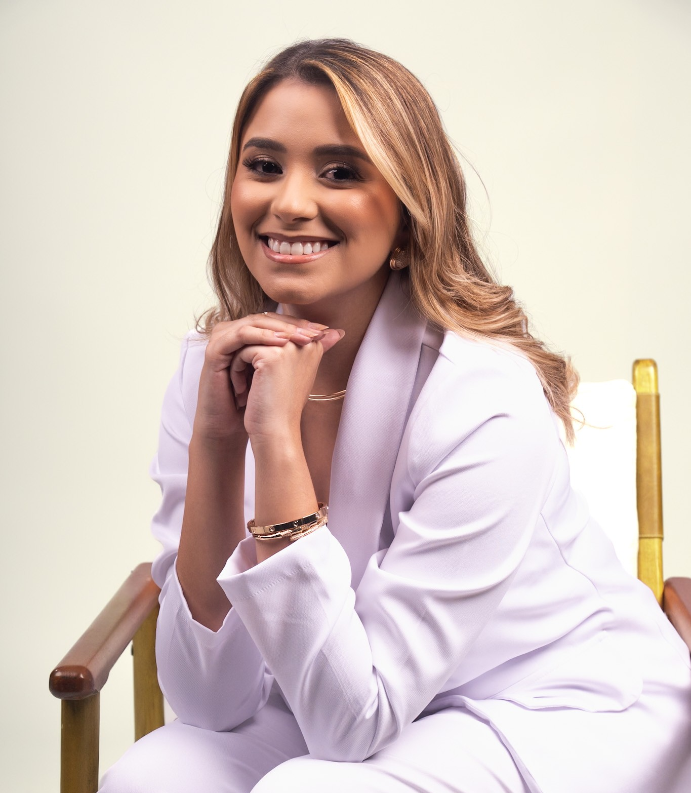

Diagnóstico oral e Odontologia Clínica baseados em evidências científicas.
Mestranda em Estomatologia e Patologia Oral pela UPE. Pesquisadora em Inteligência Artificial aplicada à Estomatologia e Patologia Oral.

Cirurgiã-Dentista pela Faculdade de Odontologia da Universidade de Pernambuco (FOP/UPE), mestranda em Clínicas Odontológicas com ênfase em Estomatologia e Patologia Oral pelo PPGO/UPE. Desenvolve pesquisas em Inteligência Artificial aplicada ao diagnóstico oral, atuando também como professora universitária em Histologia e Embriologia Oral e Semiologia.
Inteligência Artificial aplicada à Estomatologia e Patologia Oral.
Professora universitária de Histologia, Embriologia e Semiologia.
Cirurgiã-Dentista com atuação em diagnóstico oral e prática clínica baseada em evidências.
Formação multidisciplinar integrando clínica odontológica, pesquisa científica e educação em saúde.
Diagnóstico e tratamento de lesões orais.
Análise histopatológica, diagnóstico diferencial e estudo das lesões orais.
Modelos de deep learning e redes neurais convolucionais para auxiliar o diagnóstico precoce do câncer de boca.
Extensão universitária voltada à promoção da saúde bucal e prevenção do câncer de boca na comunidade.
Ensino de Histologia e Embriologia Oral e Semiologia em cursos de graduação em Odontologia.
A linha de pesquisa principal investiga o diagnóstico precoce de desordens orais potencialmente malignas, com o auxílio da inteligência artificial, contribuindo para a redução da mortalidade por câncer de boca.
Investigação do potencial de modelos de Deep Learning e Redes Neurais Convolucionais (RNC) para identificar padrões clínicos da leucoplasia oral associados ao risco de transformação maligna, aprimorando a acurácia e a precocidade diagnóstica.
Comprometida com a educação odontológica de qualidade, atuando em instituições de ensino superior com foco em disciplinas básicas e clínicas.
Para agendamento de consultas em diagnóstico oral, entre em contato. Cuidado individualizado com foco em prevenção, saúde e bem estar.
Vínculos Institucionais